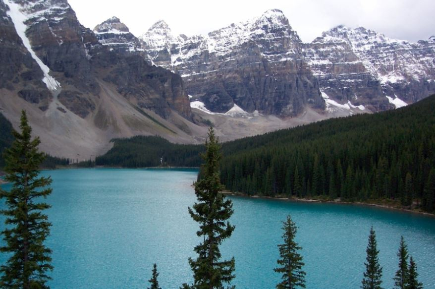
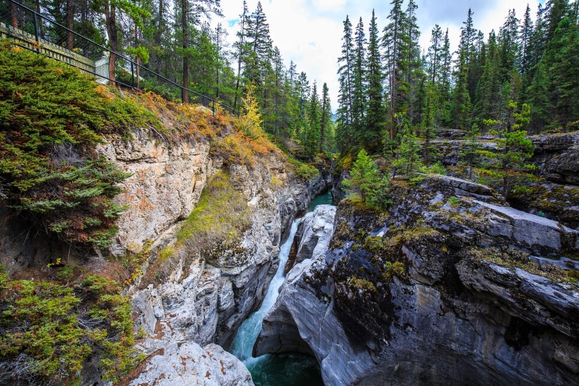
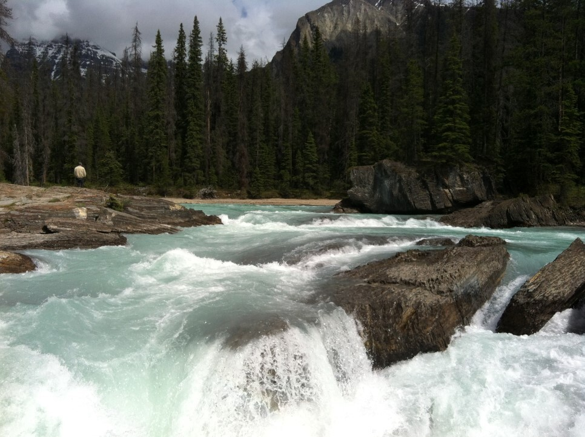
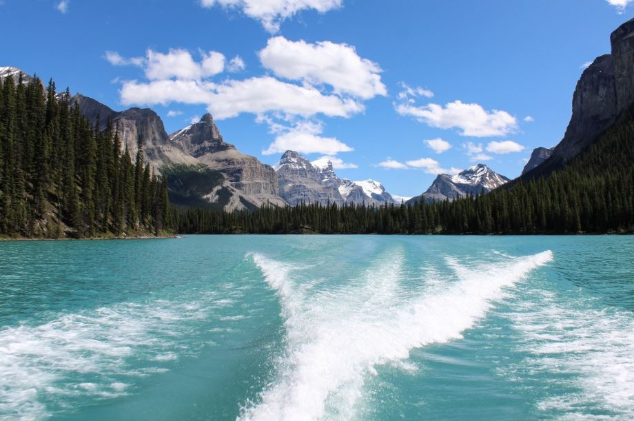

미세먼지 제로! 캐나다의 대자연을 만나는 로키산맥
청정 자연을 찾아 떠나는 여행
위대한 대자연이 살아 숨 쉬는 캐나다
안데스 산맥에 이어 세계에서 두 번째로 긴 로키산맥은 캐나다 여행의 로망으로 손꼽히는데요. 고원지대와 설산, 빙하, 호수, 침엽수 삼림지대 등 때 묻지 않은 다양한 자연환경을 보존하고 있어 갈수록 더 많은 사람들의 버킷여행지가 되고 있습니다. 오늘은 특별히 청정지역의 대표주자인 캐나다의 자연공원들을 소개합니다.
-
밴프 국립공원

웅장한 산봉우리와 에메랄드빛 호수의 완벽한 조화. 캐나다 최초의 국립공원으로 때 묻지 않은 자연과 현대적인 시설 모두를 갖춘 캐나다 여행의 대표 관광지예요. 사방으로 둘러싸인 산과 온천, 폭포가 풍부하고 특히 루이스 호수를 비롯해 헥터 호수, 모레인 호수, 보우 호수 등 청정한 빛깔을 자랑하는 다양한 호수는 이곳의 대표적인 볼거리랍니다. 경이로운 자연을 배경으로 하는 밴프타운 곳곳에는 다양한 레스토랑, 부티크샵, 스파 등 다채로운 쇼핑과 문화시설이 많아 관광객들의 발길이 끊이지 않고 있고요. 로키산맥의 전망을 감상하고 싶다면 곤돌라를 타고 설퍼산 전망대에 올라 파라노마로 펼쳐진 산맥의 웅장함을 느낄 수 있어요. 트래킹, 사이클링, 승마, 카누 등 다양한 액티비티를 즐기며 아름다운 로키산맥의 풍경을 감상할 수 있고 흑곰, 산양, 사슴 등 야생동물을 눈앞에서 만나볼 수 있는 행운도 누릴 수 있답니다.
-
재스퍼 국립공원

캐나다 로키산맥 공원 중 가장 큰 면적을 자랑하는 곳, 이 곳 바로 재스퍼 국립공원입니다. 특히 빙하로 덮인 고봉들이 끊임없이 늘어서 있고 폭포, 호수, 협곡, 온천 등 자연경관이 아름다운 명소가 가득한데요. 캐나다 최대의 빙하호수인 멀린 호수는 재스퍼 국립공원의 대표적 볼거리로, 카약/송어낚시 등 액티비티를 즐길 수 있는 크루저 투어가 있어 특별한 추억을 만들 수 있어요. 멀린 캐년에서는 트래킹과 하이킹을 즐길 수도 있다고 하네요. 재스퍼 국립공원의 하이라이트인 글레시어 스카이워크는 수만 년 전 빙하가 빚은 캐나다 로키의 절경을 500m에 걸친 트레일을 따라 하늘 위를 걷는 듯 천천히 걸으며 감상할 수 있답니다.
-
요호 국립공원

YOHO는 캐나다 원주민 언어로 '훌륭한, 경이로운'뜻을 가진 만큼 감동스러운 장관이 펼쳐져요. 해발 3,000m 이상의 산들이 많아 등산 애호가들이 많이 찾는 곳으로 요호 최대의 폭포인 타카카우 폭포, 에메랄드 호수, 자연의 다리, 와프타 폭포, 리틀 요호 밸리 등 다양한 자연 명소가 있어요. 이곳의 랜드마크인 에메랄드 호수는 이름 그대로 에메랄드 색 물빛이 주변 침엽수와 잘 어우러져 환상적인 풍경을 만드는데 캐나다 로키산맥 공원 내 많은 호수 중 청록색 빛깔이 가장 선명한 곳으로도 유명해요. 물길, 산길, 눈길이 엇갈려 나타나는 호수 둘레길 3마일 트래킹은 빼놓을 수 없는 캐나다 여행의 절정이니 놓치지 마세요!
-
워터톤 국립공원

캐나다 앨버타주 최남단으로 미국 국경과 맞대고 있는 이 곳! 대초원 외곽에 높게 솟아있는 산과 흑곰, 무스, 황금 독수리 등의 야생동물과 수많은 종류의 난초 등 독특한 동식물 생태계를 볼 수 있어요. 캐나다 로키산맥 공원 중 가장 깊은 호수인 어퍼 워터톤 레이크, 붉고 험준한 계곡 레드락 캐년 등 이곳만의 독특한 지형을 감상할 수 있답니다. 워터톤 국립공원의 유명 랜드마크인 웨일스 호텔은 영화 속에서나 등장할 법한 고풍미를 풍겨 인생 샷 명소로도 손꼽혀요.
-
마운트 롭슨 주립공원
캐나다 로키산맥의 최고봉인 롭슨 주립공원. 롭슨 마운틴을 품고있는 공원으로 산의 높이는 무려 해발 3,954m나 되어 웅장하고 신비로운 만년설을 볼 수 있어요. 재스퍼에서 차로 1시간 거리로 롭슨 산 북쪽 버그 호수까지 약 22km의 등산로가 이어져있고 남동쪽에는 밴쿠버까지 이어지는 프레이저 강이 흐른답니다. 이곳의 대표적인 볼거리 리더 가드 폭포 부근에서는 8,9월이면 산란을 위해 거꾸로 거슬러 올라운 연어 떼의 장관을 볼 수 있어요.